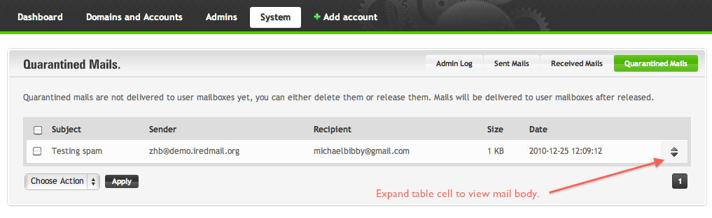
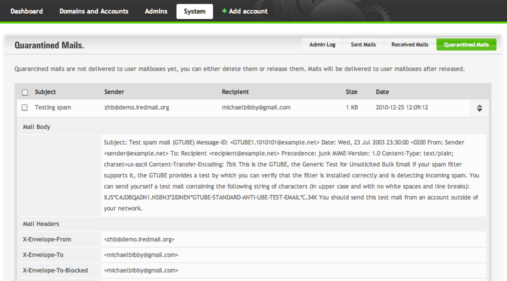

This tutorial is available in other languages. Help translate more
Italiano /
Amavisd is configured to query policy from SQL database, global policy is created during iRedMail installation, quarantining related settings are disabled by default, you can easily enable quarantining with this tutorial.
With OpenLDAP, MySQL and MariaDB backends, Amavisd queries MySQL/MariaDB
database amavisd to get policy, so we use MySQL commands for example in this
tutorial. Most commands work for PostgreSQL.
USE amavisd;
-- quarantine spam
UPDATE policy set spam_lover='N', bypass_spam_checks='N' WHERE policy_name='@.';
-- quarantine virus
UPDATE policy set virus_lover='N', bypass_virus_checks='N' WHERE policy_name='@.';
-- quarantine email which contains banned file types
UPDATE policy set banned_files_lover='N', bypass_banned_checks='N' WHERE policy_name='@.';
-- quarantine email which has bad headers.
UPDATE policy set bad_header_lover='N', bypass_header_checks='N' WHERE policy_name='@.';
Restarting amavisd service is NOT required.
Update iRedAdmin-Pro config file, make sure you have correct settings for Amavisd:
/var/www/iredadmin/settings.py./opt/www/iredadmin/settings.py or /usr/share/apache2/iredadmin/settings.py./usr/local/www/iredadmin/settings.py./var/www/iredadmin/settings.py.# File: settings.py
amavisd_db_host = '127.0.0.1'
amavisd_db_port = 3306
amavisd_db_name = 'amavisd'
amavisd_db_user = 'amavisd'
amavisd_db_password = 'password'
# Log basic info of inbound/outbound, no mail body stored.
amavisd_enable_logging = True
# Quarantining management
amavisd_enable_quarantine = True
amavisd_quarantine_port = 9998
# Per-recipient policy lookup
amavisd_enable_policy_lookup = True
Restarting Apache web server or uwsgi service (if you're running Nginx as
web server) is required.
You can now login to iRedAdmin-Pro, and manage quarantined messages via menu
System -> Quarantined Mails. Choose action in drop-down menu list to release
or delete them.
Screenshots attached at the bottom.
iRedAdmin-Pro ships script tools/notify_quarantined_recipients.py to notify
users which have email quarantined in SQL database.
Default notification email contains basic info of each quarantined email:
The notification email message is read from (HTML) template file
tools/notify_quarantined_recipients.html, if you want to modify it, please
copy it to tools/notify_quarantined_recipients.html.custom then modify it.
During upgrading iRedAdmin-Pro, this custom file will be copied to
new iRedAdmin-Pro directory, so you won't lose your customization.
Several parameters are required by this script in iRedAdmin-Pro config file:
# SMTP server address, port, username, password used to send notification mail.
NOTIFICATION_SMTP_SERVER = 'localhost'
NOTIFICATION_SMTP_PORT = 587
NOTIFICATION_SMTP_STARTTLS = True
NOTIFICATION_SMTP_USER = 'no-reply@localhost.local'
NOTIFICATION_SMTP_PASSWORD = ''
NOTIFICATION_SMTP_DEBUG_LEVEL = 0
# URL of your iRedAdmin-Pro login page which will be shown in notification
# email, so that user can login to manage quarantined emails.
# Sample: 'https://your_server.com/iredadmin/'
#
# Note: mail domain must have self-service enabled, otherwise normal
# mail user cannot login to iRedAdmin-Pro for self-service.
NOTIFICATION_URL_SELF_SERVICE = 'https://[your_server]/iredadmin/'
# Subject of notification email. Available placeholders:
# - %(total)d -- number of quarantined mails in total
NOTIFICATION_QUARANTINE_MAIL_SUBJECT = '[Attention] You have %(total)d emails quarantined and not delivered to mailbox'
To notify user periodly, please add a cron job for root user to run
tools/notify_quarantined_recipients.py. For example, every 6 hours ('6 hours'
is just an example, the period is totally up to you):
1 */6 * * * /usr/bin/python /var/www/iredadmin/tools/notify_quarantined_recipients.py --force-all >/dev/null
Don't forget to use the correct path to notify_quarantined_recipients.py on your server.
You can also run this script manually to notify users. for example, on RHEL/CentOS:
cd /var/www/iredadmin/tools/
python notify_quarantined_recipients.py --force-all
notify_quarantined_recipients.py supports few arguments:
| Argument | Comment |
|---|---|
--force-all |
Send notification to all users which have email quarantined |
--force-all-time |
Notify users for their all quarantined emails instead of just new ones since last notification. |
--notify-backupmx |
Send notification to all recipients under backup mx domain |
Note: If you just want to quarantine clean emails sent from/to certain local user, please refer to this document instead: Quarantine clean emails sent from/to certain local user
If you want to quarantine clean emails into SQL database for further approval or whatever reason, please follow below steps:
amavisd.conf:$clean_quarantine_method = 'sql:';
$clean_quarantine_to = 'clean-quarantine';
ORIGINATING, append two lines in this policy bank:$policy_bank{'ORIGINATING'} = {
...
clean_quarantine_method => 'sql:',
final_destiny_by_ccat => {CC_CLEAN, D_DISCARD},
}
Now all clean emails sent by your mail users will be quarantined into SQL database.

